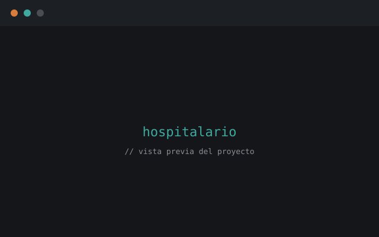
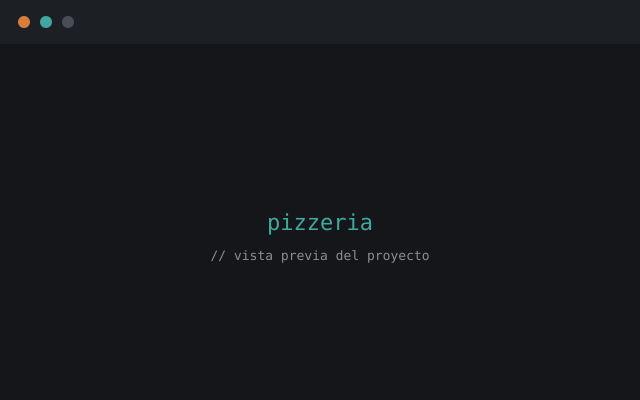
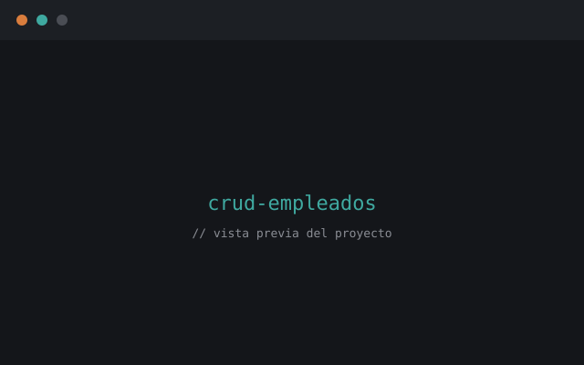
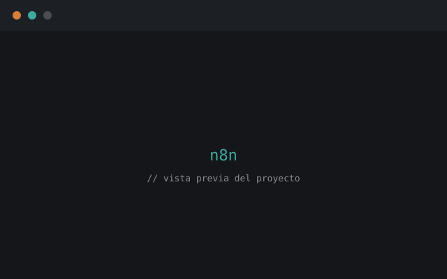

SELECT * FROM proyectos WHERE nombre = 'project-sound';
reproductor de musica
Gestión de albums, musicas y artistas.
Hola, soy
fullstack Developer
Python · JavaScript · MySQL
Construyo sistemas backend sólidos y automatizaciones que resuelven problemas reales: desde modelos de bases de datos relacionales hasta flujos inteligentes con n8n.
Soy estudiante de Desarrollo Full Stack en Campusland, enfocado en el lado backend: diseño de bases de datos, lógica de servidor y automatización de procesos. Me interesa entender a fondo cómo se mueven los datos dentro de un sistema y construir soluciones que sean claras, escalables y fáciles de mantener. Disfruto los retos técnicos que combinan lógica, estructura y resultados medibles.

SELECT * FROM proyectos WHERE nombre = 'project-sound';
Gestión de albums, musicas y artistas.

SELECT * FROM proyectos WHERE nombre = 'pizzeria';
Modelo relacional de 9 tablas con DDL completo, datos de prueba y más de 20 consultas SQL resueltas para gestión de pedidos.

SELECT * FROM proyectos WHERE nombre = 'crud_empleados';
Operaciones completas de creación, lectura, actualización y eliminación sobre una base de datos de empleados con validaciones del lado del servidor.

SELECT * FROM proyectos WHERE nombre = 'automatizacion_n8n';
Flujo de trabajo que conecta webhooks, IA y lógica de negocio para automatizar procesos sin intervención manual.
en curso
Campusland, Campus Bucaramanga
Formación activa en desarrollo backend, diseño y modelado de bases de datos relacionales, control de versiones con Git, entornos Linux y metodologías ágiles (Scrum). Aplico lo aprendido en proyectos reales que combinan lógica de servidor con automatización.
¿Tienes un proyecto en mente o una oportunidad? Escríbeme.